Examples with simulated data
Source:vignettes/articles/simulated-examples.Rmd
simulated-examples.RmdEverything below runs on simulated data. Nothing gets read from a file or downloaded, and every chunk is reproducible from the seed at the top of its section, so you can paste any of them into a fresh session and get the same figure. The scenarios are the ones I actually run into in survey-experimental work: treatment effects across conditions, audit-study callback rates, cross-national indicators over time, before-and-after comparisons.
Simulating the data
One helper, used throughout. It generates a small survey experiment with a set of respondents, a randomly assigned condition, and an outcome carrying a real but modest treatment effect.
simulate_experiment <- function(n = 900,
conditions = c("Control", "Information",
"Norms", "Both"),
effects = c(0, 0.28, 0.19, 0.41),
seed = 20260729) {
set.seed(seed)
condition <- factor(sample(conditions, n, replace = TRUE),
levels = conditions)
age <- round(rnorm(n, 46, 15))
age <- pmin(pmax(age, 18), 85)
effect <- effects[match(condition, conditions)]
data.frame(
id = seq_len(n),
condition = condition,
age = age,
# Outcome on a 1 to 7 scale, with a mild age gradient.
support = pmin(pmax(
rnorm(n, 4.1 + effect + 0.012 * (age - 46), 1.15), 1
), 7)
)
}
experiment <- simulate_experiment()
str(experiment)
#> 'data.frame': 900 obs. of 4 variables:
#> $ id : int 1 2 3 4 5 6 7 8 9 10 ...
#> $ condition: Factor w/ 4 levels "Control","Information",..: 1 1 3 3 2 4 2 3 3 4 ...
#> $ age : num 43 43 20 51 61 39 35 64 59 29 ...
#> $ support : num 3.6 4.55 2.61 1.92 3.37 ...Distributions: the box plot with the box erased
The box in a box plot holds four numbers, and a line and a dot can
hold them just as well. geom_tufteboxplot() erases it and
keeps somewhere between a third and a fifth of the ink.
geom_rangeframe(sides = "l") puts an axis line only where
the data are.
ggplot(experiment, aes(condition, support)) +
geom_tufteboxplot() +
geom_rangeframe(sides = "l") +
labs(
x = NULL, y = "Support (1-7)",
title = "Support for the policy, by experimental condition"
) +
theme_tufte() +
label_source("Simulated data, n = 900")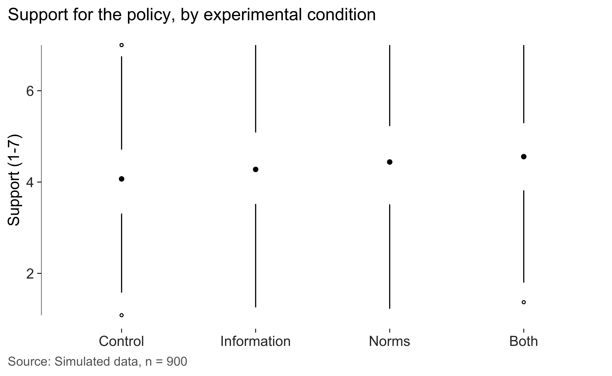
The three variants trade ink for legibility. "point" is
the default and the sparest, with whiskers, a gap, and a dot at the
median. "line" keeps a thick interquartile segment.
"offset" shifts that segment to one side, which is what you
want when the whiskers are short.
for (variant in c("line", "offset")) {
print(
ggplot(experiment, aes(condition, support)) +
geom_tufteboxplot(type = variant) +
geom_rangeframe(sides = "l") +
labs(x = NULL, y = "Support", title = paste0('type = "', variant, '"')) +
theme_tufte()
)
}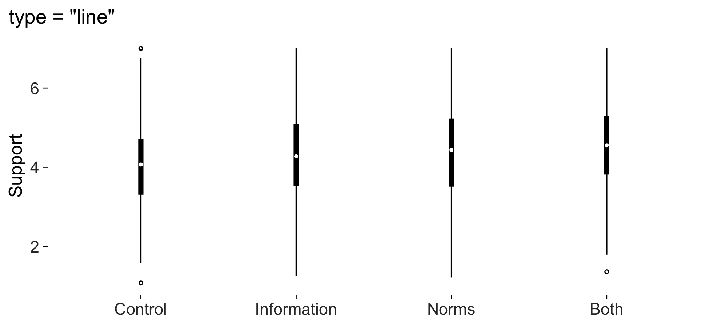
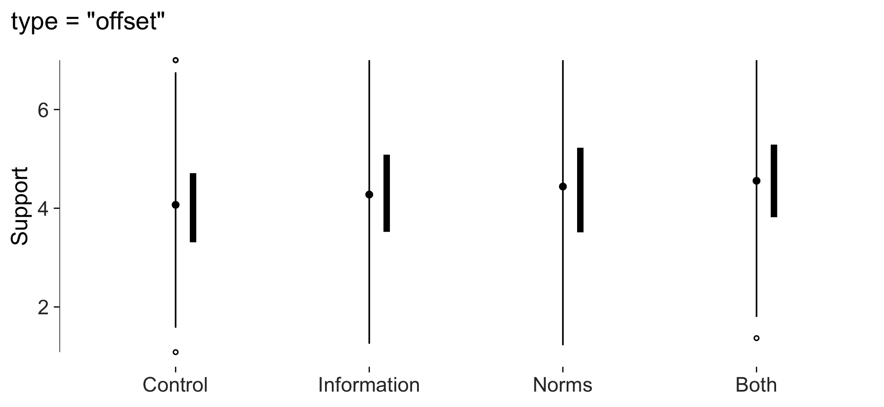
Range frames and quartile frames
A panel border is the same box whatever the numbers are. A range
frame spans only the data, so it reports the minimum and maximum for
free. A quartile frame breaks that line at the quartiles, so the axis
carries the whole five-number summary. quartile_breaks()
puts the printed labels in the same places.
It keeps all five by default, since that’s what the frame reports. If
two of them sit close enough to overprint at your font and figure size,
set min_gap yourself instead of trusting a default to guess
it, and use check_labels_fit() to find out whether they
collide at all.
ggplot(experiment, aes(age, support)) +
geom_point(alpha = 0.25, size = 1) +
geom_quartileframe() +
scale_x_continuous(breaks = quartile_breaks(experiment$age)) +
scale_y_continuous(breaks = quartile_breaks(experiment$support)) +
labs(x = "Age", y = "Support") +
theme_tufte()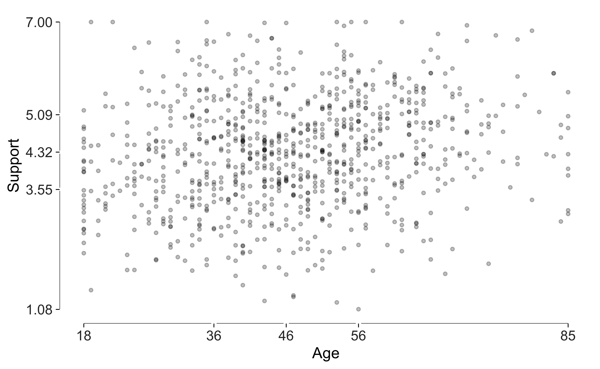
geom_dotdash() goes further still and replaces the frame
with the data themselves, putting a short tick at every observation on
both margins. Turn the theme ticks off, or you’ll get two sets of marks
saying the same thing.
ggplot(experiment, aes(age, support)) +
geom_point(alpha = 0.25, size = 1) +
geom_dotdash() +
labs(x = "Age", y = "Support") +
theme_tufte(ticks = FALSE)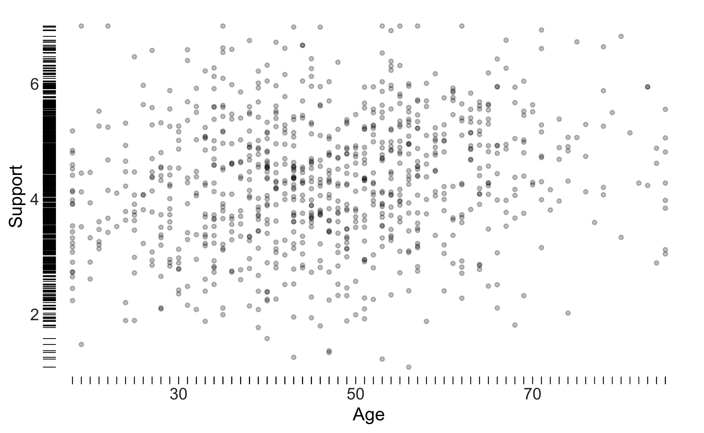
Bars with the gridlines erased through them
Bar charts need gridlines, because readers recover values from bar heights. A gridline crossing a bar, though, sits on top of ink that already carries that value, so Tufte erases it there instead of drawing over the bar.
Here is a simulated audit study: callback rates by applicant name and occupation.
set.seed(11)
callbacks <- data.frame(
name = rep(c("Emily", "Greg", "Lakisha", "Jamal"), each = 2),
occupation = rep(c("Sales", "Administrative"), 4)
)
callbacks$rate <- round(
c(10.8, 9.4, 10.2, 9.1, 6.6, 5.9, 6.4, 5.5) + rnorm(8, 0, 0.3), 1
)
ggplot(callbacks, aes(name, rate)) +
geom_col_tufte(fill = "grey72") +
facet_tufte(~ occupation) +
labs(x = NULL, y = "Callback rate (%)",
title = "Simulated callback rates by name and occupation") +
theme_tufte() +
label_source("Simulated data; not real audit-study results")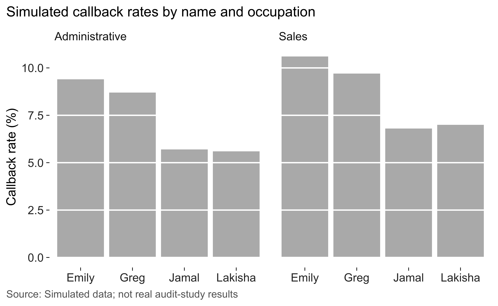
Note the bars start at zero. tufte_audit() will tell you
when they don’t, and lie_factor() will tell you by how much
the figure exaggerates.
Dots, when a zero baseline isn’t wanted
Sometimes zero sits a long way from the data and starting there wastes most of the panel. That’s the case for dots over bars. A dot encodes its value by position, so you can read it against a scale that excludes zero without lying about proportions, and it costs a fraction of the ink. Cleveland’s leader lines let the eye run along a row without drifting into the next one.
Sort before plotting. An alphabetical dot plot throws away the main advantage of the form, which is that you can see rank at a glance.
support <- aggregate(support ~ condition, experiment, mean)
ggplot(support, aes(support, stats::reorder(condition, support))) +
geom_cleveland_dot() +
labs(x = "Mean support (1-7)", y = NULL) +
theme_tufte() +
label_source("Simulated data, n = 900")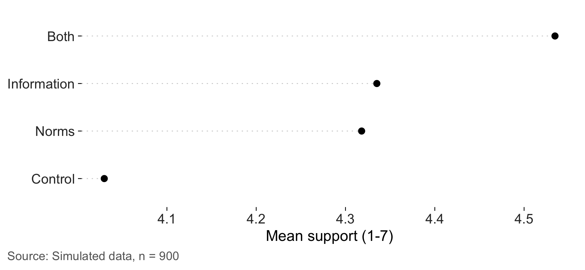
Banking the aspect ratio
The same series can look like a gentle drift or a cliff depending
only on how tall the panel is, and neither reading is the data’s fault.
Cleveland’s rule is that we judge slope most accurately near 45 degrees,
and the aspect ratio is what puts it there. bank_to_45()
computes the height that does it.
cycles <- data.frame(
month = 1:240,
value = sin(seq(0, 12 * pi, length.out = 240)) + seq(0, 2, length.out = 240)
)
series <- ggplot(cycles, aes(month, value)) +
geom_line(linewidth = 0.3) +
geom_rangeframe(sides = "l") +
labs(x = "Month", y = "Index") +
theme_tufte()
banked <- bank_to_45(series, width = 6.5)
banked
#>
#> ── Banking to 45 degrees
#> Aspect ratio 0.133 (height / width), from 239 segments by "median_slope".
#> At 6.5in wide, that's a panel 0.86in tall. Allow more for axis labels and
#> titles.Drawn at roughly that height the panel is short and wide, the rising and falling flanks of each cycle sit near 45 degrees, and the slow upward drift underneath the oscillation is the first thing you see.
series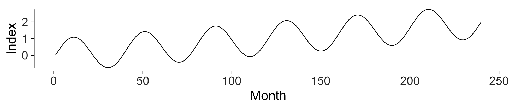
Here’s the same data in a conventionally proportioned panel. Nothing is hidden, and for reading the individual cycles I think it’s arguably the better picture. The vertical stretch does exaggerate every flank, though. The oscillation dominates, and the trend it’s riding on takes noticeably longer to spot.
series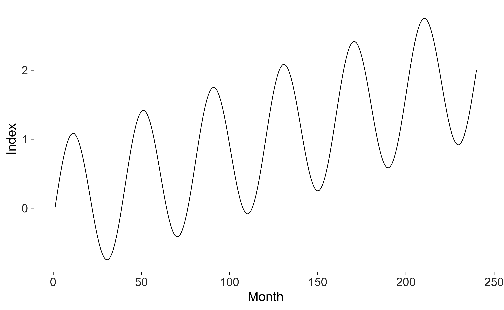
Which one you want depends on the question. Banking is a rule for reading slopes, so it helps when the rate of change is the finding and hurts when the levels are. I’d call it a defensible default rather than an obligation.
Is it dark enough to read?
Erasing ink is a virtue right up to the point where what survives can
still be seen. check_contrast() measures every colour the
plot draws with against the background, using the WCAG minima of 4.5 to
1 for text and 3 to 1 for marks.
check_contrast(
ggplot(experiment, aes(age, support)) +
geom_point(colour = "grey80", size = 0.8) +
theme_tufte()
)
#> # A tibble: 5 × 5
#> role colour ratio threshold passes
#> <chr> <chr> <dbl> <dbl> <lgl>
#> 1 data mark grey80 1.61 3 FALSE
#> 2 caption grey40 5.74 4.5 TRUE
#> 3 subtitle grey30 8.45 4.5 TRUE
#> 4 axis text grey20 12.6 4.5 TRUE
#> 5 strip text #1A1A1AFF 17.4 4.5 TRUEGrey 80 on white is elegant, and for a good number of readers it’s invisible.
Small multiples
Tufte’s answer to multivariate data is repetition instead of
complication. The same graphic, at the same scale, once per condition.
facet_tufte() fixes the scales and warns if you try to free
them, since free scales wreck the comparison the design exists to
make.
ggplot(experiment, aes(age, support)) +
geom_point(alpha = 0.3, size = 0.8) +
geom_smooth(method = "lm", se = FALSE, colour = "grey20", linewidth = 0.4,
formula = y ~ x) +
geom_rangeframe() +
facet_tufte(~ condition, ncol = 4) +
labs(x = "Age", y = "Support") +
theme_tufte()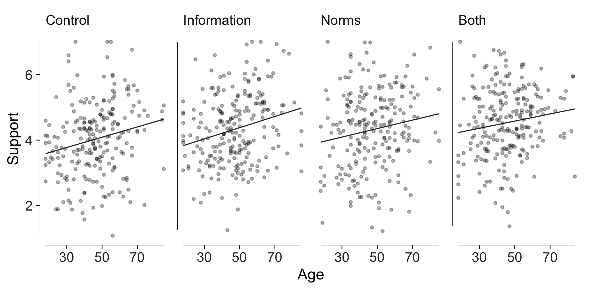
Direct labelling instead of a legend
A legend makes the reader look away, hold a colour in memory, look
back and match it up. geom_text_last() puts the name where
the eye already is, at the end of the line.
set.seed(4)
countries <- c("Australia", "Japan", "Korea", "New Zealand")
panel <- do.call(rbind, lapply(seq_along(countries), function(i) {
data.frame(
year = 2000:2024,
country = countries[i],
trust = cumsum(rnorm(25, 0.1 * (i - 2.5), 1.1)) + 45 + 4 * i
)
}))
ggplot(panel, aes(year, trust, colour = country)) +
geom_line(linewidth = 0.4) +
# Labels take a fixed dark grey rather than the line colour: a label in the
# lightest grey of a sequential palette is legible as a line and not as text.
geom_text_last(aes(label = country), size = 3, colour = "grey15") +
geom_rangeframe(sides = "l") +
scale_x_continuous(expand = expansion(mult = c(0.02, 0.18))) +
scale_colour_tufte("grey") +
labs(x = NULL, y = "Institutional trust index") +
theme_tufte() +
theme(legend.position = "none") +
label_source("Simulated panel, four countries, 2000-2024")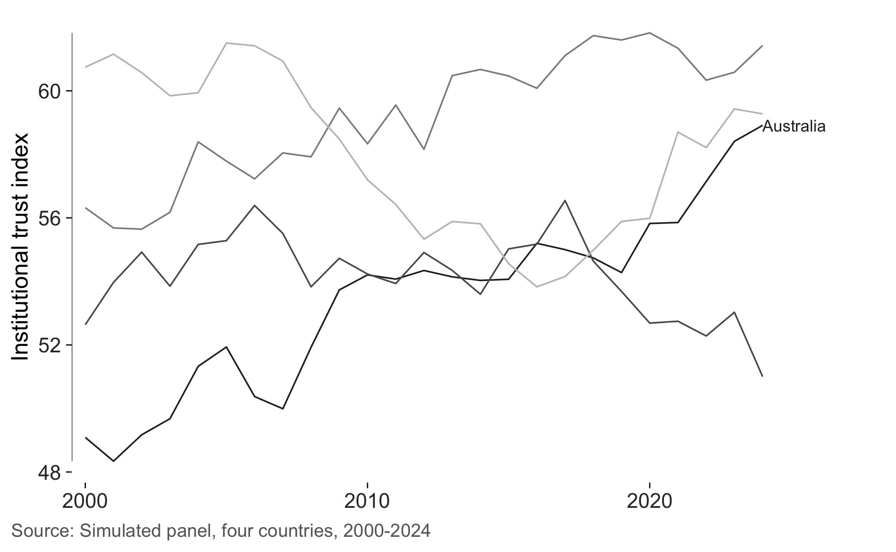
geom_text_last() places each label at its series’ final
point and does no collision avoidance, so two series ending at nearly
the same value will overprint. When that happens, nudge one with
nudge_y, or swap in ggrepel::geom_text_repel()
on the same data. A slopegraph, below, solves the problem properly by
spreading colliding labels apart itself.
Slopegraphs
A slopegraph shows before-and-after for many units at once. Each unit is a line. The slope is the change, the height is the level, and the crossings show you which units changed rank. Every number gets printed on the graphic, which makes the y axis redundant, so it goes. The table and the figure end up being the same object.
set.seed(7)
units <- c("Victoria", "New South Wales", "Queensland", "South Australia",
"Western Australia", "Tasmania")
before <- round(runif(6, 22, 41), 1)
change <- round(rnorm(6, 3.5, 5), 1)
wave <- data.frame(
state = rep(units, each = 2),
wave = rep(c("2015", "2025"), 6),
value = as.vector(rbind(before, before + change))
)
slopegraph(wave, wave, value, state) +
labs(
title = "Share reporting contact with a migrant neighbour",
subtitle = "Simulated two-wave panel, percentage points"
)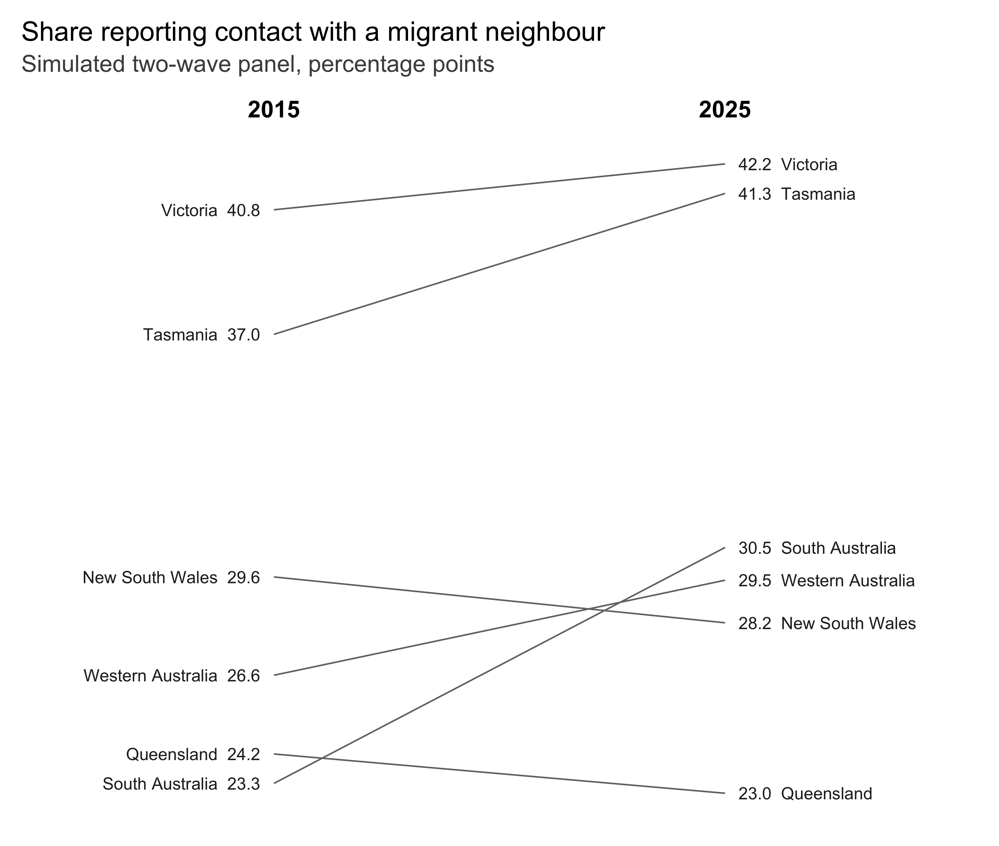
direction_colour = TRUE colours the lines by whether the
unit rose or fell. I’d only bother when the direction is the
finding.
slopegraph(wave, wave, value, state, direction_colour = TRUE)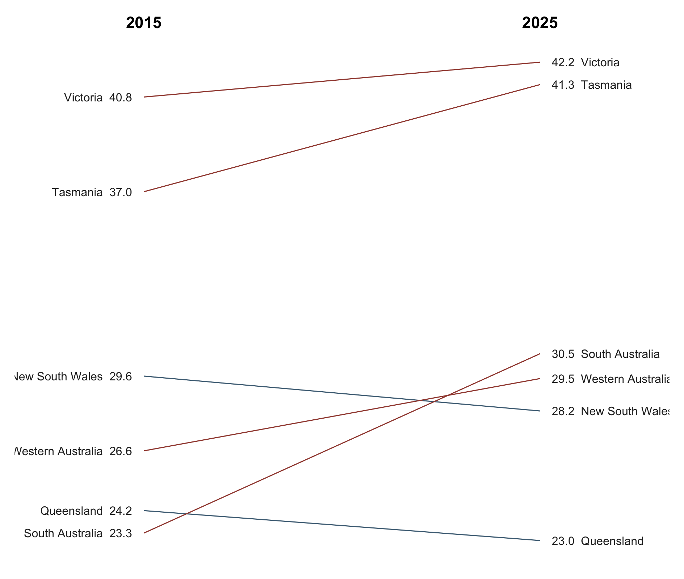
Sparklines
A sparkline is word-sized, small enough to sit inside a sentence, with the normal range as a grey band, dots at the extremes, and the final value printed at the end. Each series keeps its own vertical scale, since a sparkline reports the shape of one series instead of inviting you to compare levels.
set.seed(21)
indicators <- do.call(rbind, lapply(
c("Turnout", "Trust in parliament", "Union density", "Newspaper readership"),
function(nm) {
data.frame(
quarter = 1:80,
series = nm,
value = cumsum(rnorm(80, 0, 1)) + 50
)
}
))
sparklines(indicators, quarter, value, series)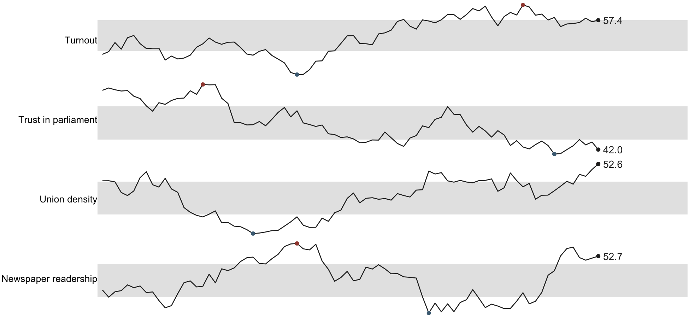
A single sparkline at the size it’s meant to be printed is
sparkline(). sparkline_grob() returns a grob,
so you can drop one into a table cell or an inline chunk.
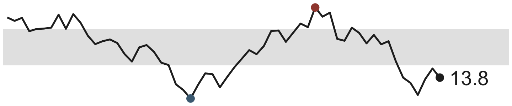
Colour as a code
Four palettes, each answering a different question.
"grey" encodes an ordered variable without smuggling in a
second categorical signal you didn’t ask for. "accent" is
greys plus one signal red, for when exactly one series matters and the
rest are context. "muted" is desaturated earth tones that
sit behind annotation without fighting it. "divergent"
handles signed quantities with a neutral midpoint instead of a white
one.
pals <- c("grey", "accent", "muted", "divergent")
swatches <- do.call(rbind, lapply(pals, function(p) {
cols <- tufte_pal(p)(5)
data.frame(palette = p, i = seq_along(cols), colour = cols)
}))
ggplot(swatches, aes(i, palette, fill = colour)) +
geom_tile(colour = "white", linewidth = 2) +
scale_fill_identity() +
labs(x = NULL, y = NULL) +
theme_tufte(ticks = FALSE) +
theme(axis.text.x = element_blank())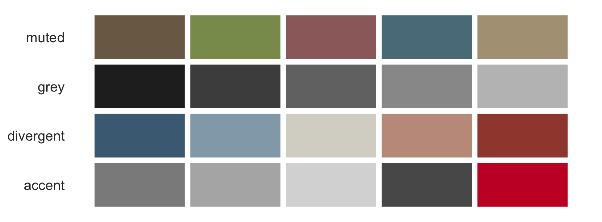
Used in anger, with grey for context and one accent for the series carrying the argument.
focus <- panel
focus$highlight <- ifelse(focus$country == "Korea", "Korea", "Other")
ggplot(focus, aes(year, trust, group = country, colour = highlight)) +
geom_line(linewidth = 0.4) +
geom_rangeframe(sides = "l") +
scale_colour_manual(values = c(Korea = "#c8102e", Other = "#bfbfbf")) +
geom_text_last(
data = subset(focus, country == "Korea"),
aes(label = country), size = 3, colour = "#c8102e"
) +
scale_x_continuous(expand = expansion(mult = c(0.02, 0.1))) +
labs(x = NULL, y = "Institutional trust index") +
theme_tufte() +
theme(legend.position = "none")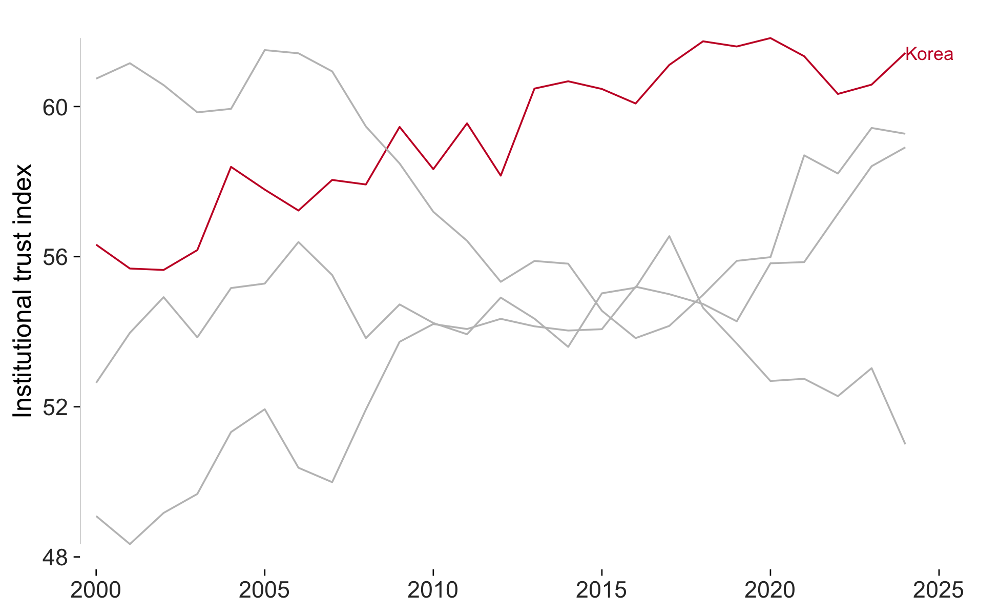
Auditing the result
Every figure above can be audited. tufte_audit() reports
the stated criteria a figure misses, and separately measures the
quantities Tufte gives a direction for but no threshold.
final <- ggplot(experiment, aes(condition, support)) +
geom_tufteboxplot() +
geom_rangeframe(sides = "l") +
labs(x = NULL, y = "Support (1-7)") +
theme_tufte() +
label_source("Simulated data, n = 900")
tufte_audit(final, width = 6.5, height = 4)
#>
#> ── Tufte audit ──
#>
#> At 6.5in x 4in: 0 stated criteria not met.
#>
#> ── Measured, not graded
#> Tufte states a direction for these rather than a threshold. Read them against
#> another draft of the same figure.
#> • Data-ink ratio 0.52: 52% of the ink varies with the data. Tufte asks that
#> this be maximised within reason and names no threshold, so read it against
#> another draft of this figure rather than against a target.
#> • Data density 88.3 numbers per square inch: 1800 entries over 20.4 square
#> inches. Tufte ranks published graphics by this and sets no minimum.
#> • 1 distinct colour in use. Tufte's advice on colour is qualitative, so this is
#> a count and not a verdict.
#> • 4 series overlaid in one panel. facet_tufte() would show the same data as
#> small multiples. Tufte gives no number at which to switch.
#>
#> ── Met
#> • Panel carries no background fill
#> • No minor gridlines
#> • No full panel border
#> • No pie chart
#> • Lie factor within Tufte's band
#> • No legend to decode
#> • No variable encoded twice
#> • The figure names its source
#> • Wider than it is tall
#> • Ink clears the WCAG contrast minimum
#> • Nothing is clipped at the printed sizeThe measuring article goes through what each of those is actually computing, and where the numbers can mislead you.